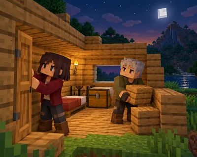

第一晚怎么过 难度 · 挑战 约 86 词
A Small Home for Two
两个人的第一晚

这篇讲什么
米娅和本一起开始了一个新世界。
核心词:Bed —— 在画面里找到它,再把单词念出来。
Mia and Ben start a new world together.
游戏里会用到的一句,读两遍再抄一次。
第一晚怎么过 难度 · 挑战 约 86 词
两个人的第一晚

米娅和本一起开始了一个新世界。
核心词:Bed —— 在画面里找到它,再把单词念出来。
Mia and Ben start a new world together.
游戏里会用到的一句,读两遍再抄一次。